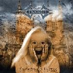

| Artist: | Ricocher |
| Title: | Cathedral Of Emotions |
| Label: | Red Sea Records RED5018 |
| Length(s): | 59 minutes |
| Year(s) of release: | 2002 |
| Month of review: | [08/2002] |
| 1) | Haunted By Dreams | 6.57 |
| 2) | Child Inside | 5.20 |
| 3) | Ideals | 4.29 |
| 4) | Cathedral Of Emotions | 10.34 |
| 5) | Painting | 4.52 |
| 6) | Fugitive | 5.10 |
| 7) | Live Your Life | 6.28 |
| 8) | Out Of Hands | 5.08 |
| 9) | Mask Of Illusions | 10.29 |
Child Inside is somewhat slower than its predecessor, but the main elements remain present. A pleasant melody carried by keys and guitars, with a guitar solo thrown as well. The pretty okay guitar riff shows the first signs of For Absent Friends-ism.
The largest part of Ideals sounds like a For Absent Friends with heavier guitars; the tinkly keys, the melody line, everything's there. Towards the end it drops off towards some very happy let's all sing along bit I could easily have done without.
Despite its length, Cathedral Of Emotions has the feel of a friendly acoustic song, sung at MTV unplugged. Not until half way through are elements introduced you'd expect on a longer track: some added complexity and a jammy tense feel. And just when I think things are looking up, I'm hit by a guitar solo that's so bloody happy.
Painting once again makes me think of German band Chandelier, which is largely helped by the vocal sound, but there's something else that brings on the association. This track has the makings of a ballad, but not one of the better ones.
Fugitive has a strong and riffy start. The strong guitars push the poppyness to the back. Sort of okay.
Live Your Life is a bit of a slower track. Melodic with nice keys, and a slow build up, the guitars sometimes used as rhythm guitar. For a change the guitar solo actually has a double layer, to keep it from breaking the tension. And just when I start to think they're finally gonna bring one home, the bridge shatters it all. Sure, they start to pick it up again towards the end, but that bridge. Argh.
The start of Out Of Hands brings on a guitar and keys that slowly build tension, that is completely oblitterated by the bouncy happiness that is to follow. This is a pretty irritating offering, I'd have to say.
Mask Of Illusions has a strong start, guitars, keyboards, even a mellotron choir sound. This is what we crave. Especially after what's gone before. The acoustic semi ditty that follows, however, doesn't quite follow up on that promise, but as it progresses the track leads us along some more progressive works, making it into what should be considered the grand finale. Unfortunately it's also, in a way, the overture.